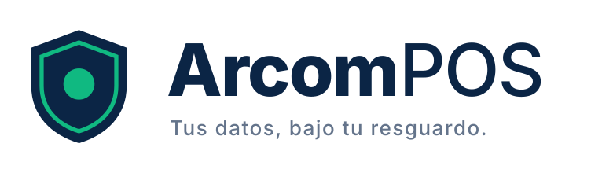
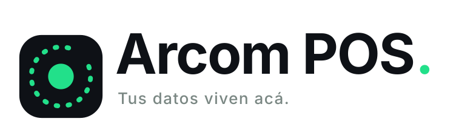
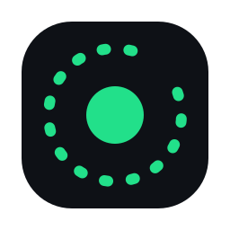
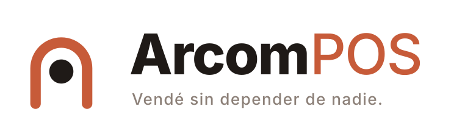
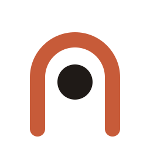

Propuesta de identidad visual · Arcom POS
Mensaje central: confianza soberana de datos.
Arcom POS es local-first: la base de datos vive en la máquina del comerciante, no en una nube ajena. Ese es el diferencial de venta, y el branding tiene que comunicarlo antes de que alguien lea una sola línea de copy.
Tres ideas fuerza derivadas del posicionamiento local-first. Toda pieza de la identidad debe poder justificarse contra una de ellas.
SQLite embebido, backup diario local, exportación a SQL estándar. Sin lock-in, sin mensualidad por leer tu propia información.
El POS no depende de la nube para cobrar. La sync opcional es un lujo, no un requisito. Marca = continuidad.
El dueño del negocio ve, toca y respalda sus datos. La marca debe sentirse sólida, no etérea: signos cerrados, no humo de nube.
La identidad actual (landing v2) se mantiene como referencia obligada: azul institucional + esmeralda de CTA + ámbar de énfasis. Cualquier ruta nueva debe poder reemplazarla sin romper la continuidad con los usuarios existentes.
—
Sólida y convencional, pero genérica: el cuadrado con la “A” no dice local-first ni soberanía. Sirve como baseline y como opción de mínima continuidad.
Cada ruta parte de un signo distinto para el mismo territorio: el dato que permanece en la máquina del comerciante.

Tus datos, bajo tu resguardo.
El isotipo es un escudo con anillo y núcleo: el sello de garantía del comercio argentino. Evoluciona la paleta vigente en vez de romperla — el azul profundo aporta la seriedad fiscal (ARCA/AFIP, caja, arqueos) y el esmeralda conserva la memoria de CTA de la landing actual.
Ideal si: querés máxima continuidad con la marca existente y un tono serio/profesional para el público PyME que factura.


Tus datos viven acá.
Un núcleo sólido e inamovible (tu base de datos local) dentro del equipo, y un arco punteado abierto y tenue alrededor: la nube opcional, explicitada como algo que roda alrededor pero no sostiene al sistema. Es el concepto local-first hecho signo — se entiende sin explicación y funciona como sistema: el cuadrado redondeado escala a app icon, favicon y placeholders.
Ideal si: la marca tiene que vender el diferencial local-first en una sola mirada, con lenguaje tech actual y máximo contraste en el POS (muchas UIs en dark mode).


Vendé sin depender de nadie.
El arco de la puerta del comercio con el núcleo oscuro adentro: la marca como umbral físico, no como servicio etéreo. Paleta cálida (terracota/tinta) que humaniza y diferencia de todo el POS market saturado de azules; apela a la cercanía con el comercio de barrio.
Ideal si: el tono de marca querés que sea cercano y artesanal antes que corporativo o tech.
Evaluación contra los criterios del posicionamiento, no contra el gusto personal.
| Criterio | Actual | A · Sello | B · Núcleo | C · Portal |
|---|---|---|---|---|
| Comunica local-first sin copy | Bajo | Medio | Alto | Medio |
| Continuidad con marca vigente | Alto | Alto | Medio | Bajo |
| Diferenciación en el mercado POS | Bajo | Medio | Alto | Alto |
| Escalabilidad (app icon, favicon, mono) | Medio | Alto | Alto | Alto |
| Contraste en UI dark (POS) | Medio | Medio | Alto | Bajo |
| Tono fiscal / ARCA credibility | Alto | Alto | Medio | Medio |
Ruta C — “Portal” es la identidad elegida. El umbral del comercio con el núcleo de datos adentro ancla la promesa local-first en algo físico y cercano: el negocio existe acá, y sus datos también. La paleta cálida (terracota/tinta/arena) diferencia de todo el POS market saturado de azules, y el tono en voseo del claim — “Vendé sin depender de nadie.”— convierte el diferencial técnico en una promesa de autonomía del dueño del negocio.